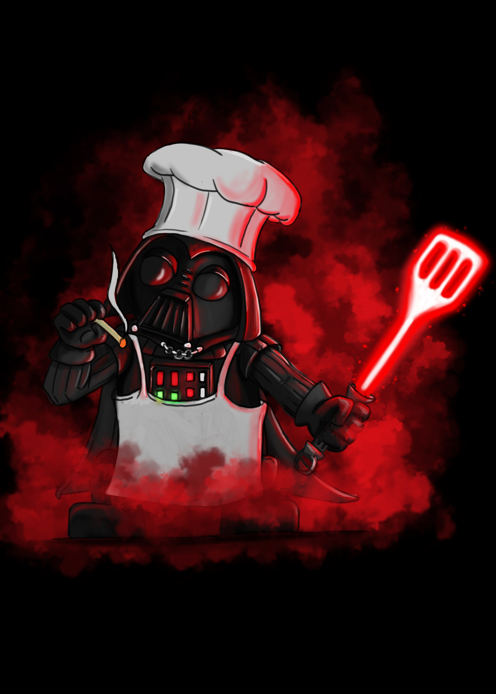

<mat-toolbar>
  <button mat-icon-button class="example-icon" aria-label="Example icon-button with menu icon">
    <mat-icon>menu</mat-icon>
  </button>
  <span>Cardápio</span>
</mat-toolbar>


<h1 class="nomeRestaurante">Vader Cuisine</h1>

<mat-grid-list cols="2" rowHeight="2:1">
  <mat-grid-tile class="itensCardapio">Coxa de Chewbacca</mat-grid-tile>
  <mat-grid-tile class="itensCardapio">Costela de Ewoks</mat-grid-tile>
  <mat-grid-tile class="itensCardapio">Porg Assado</mat-grid-tile>
  <mat-grid-tile class="itensCardapio">Comidas</mat-grid-tile>
  <mat-grid-tile class="itensCardapio">Comidas</mat-grid-tile>
  <mat-grid-tile class="itensCardapio">Comidas</mat-grid-tile>
  <mat-grid-tile class="itensCardapio">Combustível da Millennium Falcon</mat-grid-tile>
  <mat-grid-tile class="itensCardapio">Green/Blue Milk</mat-grid-tile>
  <mat-grid-tile class="itensCardapio">Jabba Juice</mat-grid-tile>
  <mat-grid-tile class="itensCardapio">Bebidas</mat-grid-tile>
  <mat-grid-tile class="itensCardapio">Bebidas</mat-grid-tile>
  <mat-grid-tile class="itensCardapio">Bebidas</mat-grid-tile>
  <mat-grid-tile class="itensCardapio">Sobremesas</mat-grid-tile>
  <mat-grid-tile class="itensCardapio">Sobremesas</mat-grid-tile>
  <mat-grid-tile class="itensCardapio">Sobremesas</mat-grid-tile>
  <mat-grid-tile class="itensCardapio">Sobremesas</mat-grid-tile>
</mat-grid-list>